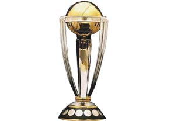

Major Tournaments!
Cricket, a top notch game, came on track from England in 16 century. From then on, it has become national game of England along with pulling the rope of popularity in west, sub-continent and few other countries.
Worldwide popular game, typically known as bat and ball sports, characteristically played between two teams, in an oval ground with a pitch paved on it. Cricket, a nail biting show, is so unpredictably beautiful that one player with a bat might be out in the next minute, a complete run down from ground to pavilion.
11 players on the field, on one side two players between wickets hitting hard for runs, cautiously dodging wickets. While on the other side of the sensational entertainment, bowler endeavors to make sure that batsman have a walk back to pavilion. Whereas, fielders adding spark to the bowlers sweat. Same as both teams switching the positions for second innings, fight continues for the title.
This classic sport has many progressions, most trendy are World Cup, Test series, T20 cups, One Day International (ODI) and many more other highly sponsored series of matches. A game of commitment, strength with a lot of drama has its roots connected to ICC (International Cricket Board) comprising of 104 members, allied with home boards all around the world.
World cup and Test series are stated as meat of cricket, as they share equal portion of power compared to other international games. Giant of all series, World cup, international one day cricket, conducted after 4 years, electing all the countries affiliated with ICC to participate in this huge event. One of core part of cricket, test series, played by many countries affiliated with ICC. Spell of test match lasts up to five days, holding the title longest series in Cricket. Unlike test matches, T20 series, comprising of only 20 overs, names itself as the shortest match series in Cricket. Till now, highest score in a T2O cricket series is 175 off 66 balls by very brilliant, Chris Gayle. Adding to it, ODI’s acronym of One Day Internationals is constrained to 50 overs with same rules and regulations. Apart from the series held by ICC including various countries, few countries on their own conduct national league cricket. They are based on the same format as conducted in T20 cricket series by ICC. Most popular of them are IPL, PSL, and BPL. IPL is conducted by India, with the sectioning of 8 franchise teams. PSL is conducted by Pakistan, initiated in 2016, comprising of 5 franchise teams. Making it to the last option of the list, BPL is conducted by Bangladesh, consisting of 7 franchise teams. All three of these national leagues held every year with amazing spirit and brilliancy. Apart from all these leagues two more highly admired and streamed series Big Bash and Champions League are also keeping Cricket up above high.
One major characteristic of Cricket is its universality. It is not only restricted to the male society of the world but females are also going shinning side by side and standing out in this sports. Another participation in Cricket that endlessly encourages everyone out there to never give up on their dream for cricket in “Blind Cricket” played by blind or partially sighted players, conducted by World Blind Cricket Council (WBCC).